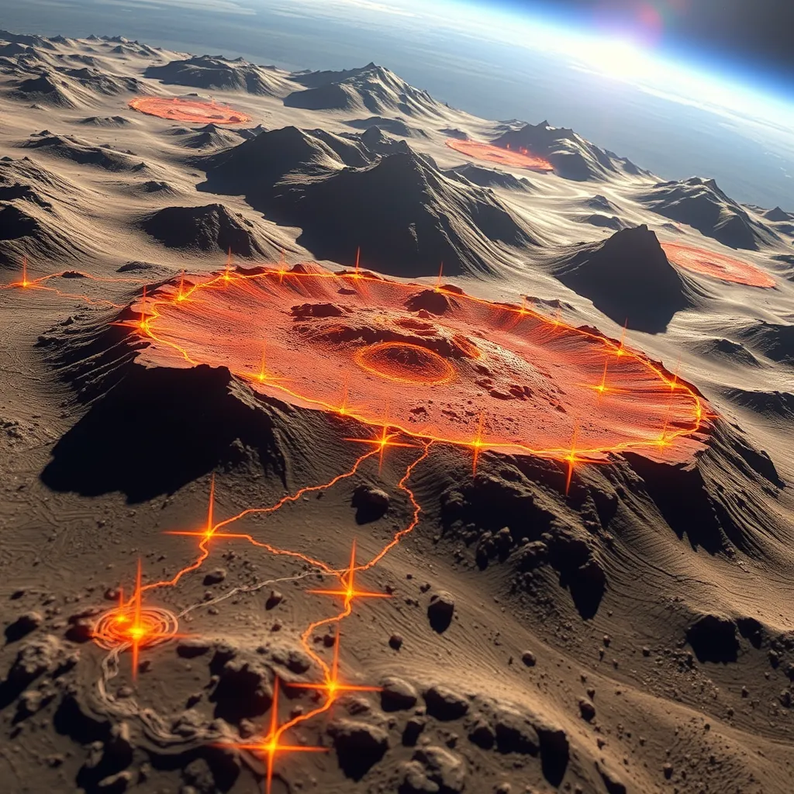

Política🗳
Bloqueio da Rede Social X no Brasil
O que será do brasil no futuro...
A ordem de bloqueio da rede social X (anteriormente Twitter) no Brasil, expedida pelo ministro do STF Alexandre de Moraes, gerou ampla repercussão na imprensa internacional nesta sexta-feira, 30 de agosto de 2024. A decisão foi tomada após a plataforma não cumprir um prazo de 24 horas para nomear um representante legal no país, conforme exigido por Moraes. A suspensão foi interpretada como uma escalada no conflito entre o ministro e Elon Musk, proprietário da rede social.
Jornais como The New York Times e Clarín destacaram que a suspensão do X afetará um mercado com mais de 20 milhões de usuários no Brasil, sendo um dos maiores do mundo para a plataforma. O The Guardian e o El País também relataram que Moraes justificou sua decisão com base na necessidade de combater a disseminação de discursos extremistas e de desinformação, acusando Musk de promover um ambiente de impunidade nas redes sociais.
A cobertura internacional enfatizou a polarização em torno da figura de Moraes, que tem se tornado uma das personalidades mais influentes no debate sobre liberdade de expressão e regulação da internet no Brasil. A decisão de bloqueio foi considerada polêmica, com usuários brasileiros já manifestando a intenção de utilizar redes privadas virtuais (VPNs) para contornar a restrição.
A reação de Musk foi imediata, com a empresa X descrevendo as ações de Moraes como "ilegais" e "censura". A situação continua a evoluir, com implicações significativas para a plataforma e seus usuários no Brasil, além de possíveis repercussões financeiras para a empresa.
Astronomia🌌
Astrônomos testemunham a formação de uma 'galáxia monstro' no alvorecer cósmico
Astrônomos observaram um par de galáxias em pleno processo de fusão há 12,8 bilhões de anos, um evento que promete resultar na formação de uma 'galáxia monstro', um dos objetos mais brilhantes do universo. Este fenômeno, capturado pelo telescópio ALMA (Atacama Large Millimeter/submillimeter Array), oferece insights valiosos para a compreensão da evolução precoce das galáxias e buracos negros no universo primordial.
Os quasares, objetos luminosos alimentados pela matéria que cai em um buraco negro supermassivo no centro de uma galáxia, são geralmente associados a esse tipo de fusão galáctica. A teoria mais aceita sugere que quando duas galáxias ricas em gás se fundem para formar uma única galáxia maior, a interação gravitacional entre elas faz com que o gás seja atraído para o buraco negro supermassivo, desencadeando a atividade dos quasares.
Para testar essa teoria, uma equipe internacional de pesquisadores liderada por Takuma Izumi utilizou o ALMA para estudar o par de quasares mais antigo conhecido, descoberto por Yoshiki Matsuoka, da Universidade de Ehime, em imagens capturadas pelo Telescópio Subaru. Localizado na direção da constelação de Virgem, esse par de quasares existiu durante os primeiros 900 milhões de anos do universo. Eles são relativamente tênues, o que indica que os quasares ainda estão em estágios iniciais de evolução.
As observações do ALMA mapearam as galáxias hospedeiras dos quasares e revelaram que estão conectadas por uma "ponte" de gás e poeira, confirmando que estão de fato se fundindo. Além disso, as observações permitiram que a equipe medisse a quantidade de gás disponível, essencial para a formação de novas estrelas. Os resultados mostraram que as galáxias são extremamente ricas em gás, sugerindo que, além de uma futura atividade quasar mais intensa, a fusão também desencadeará um rápido aumento na formação de estrelas, conhecido como "starburst".
Espera-se que a combinação de atividade intensa de starburst e quasar crie um objeto superbrilhante no universo primordial, conhecido como 'galáxia monstro'. Essas descobertas são cruciais para entender como as galáxias e buracos negros mais luminosos se formaram no início do universo.
Ciência🧪
NASA descobrem campo elétrico em torno da Terra
Uma equipe de cientistas da NASA revelou uma descoberta surpreendente: a existência de um campo elétrico em torno da Terra. Essa descoberta, feita por meio de dados coletados pelo satélite Magnetospheric Multiscale (MMS), tem o potencial de revolucionar nosso entendimento sobre a interação entre o planeta e o espaço.
O campo elétrico foi detectado a uma distância de cerca de 60.000 km da superfície terrestre, na região conhecida como magnetosfera. Essa camada protetora, formada pelo campo magnético da Terra, desvia partículas carregadas provenientes do Sol, protegendo a vida no planeta.
Segundo o pesquisador Jim Burch, do Southwest Research Institute, a descoberta do campo elétrico abre novas perspectivas sobre como a magnetosfera funciona. "Esse campo elétrico está intimamente relacionado com a transferência de energia do vento solar para a magnetosfera", explica Burch.
A compreensão dessa interação é crucial para prever e mitigar os efeitos de tempestades solares, que podem danificar satélites, interromper comunicações e até mesmo afetar redes elétricas na Terra. Além disso, o campo elétrico pode influenciar a trajetória de partículas carregadas, como prótons e elétrons, que compõem os cinturões de radiação ao redor do planeta.
A descoberta do campo elétrico é um marco importante na pesquisa espacial e abre caminho para novas investigações sobre a complexa dinâmica entre a Terra e o espaço circundante. Com essa nova perspectiva, os cientistas esperam aprimorar modelos e previsões sobre os fenômenos que ocorrem na magnetosfera, contribuindo para uma melhor compreensão do ambiente espacial em torno do nosso planeta.